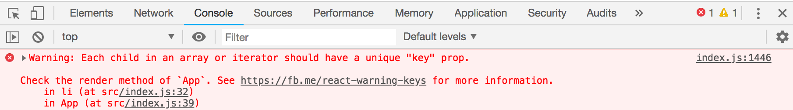
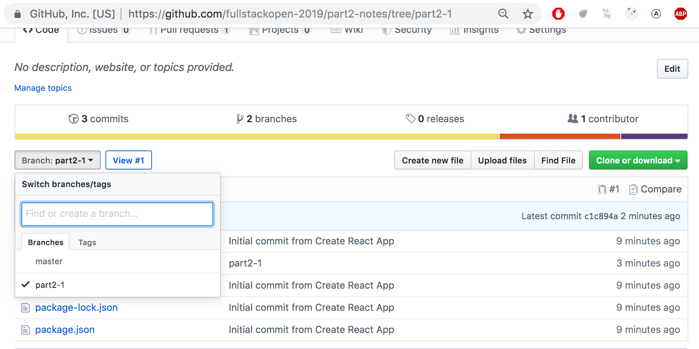
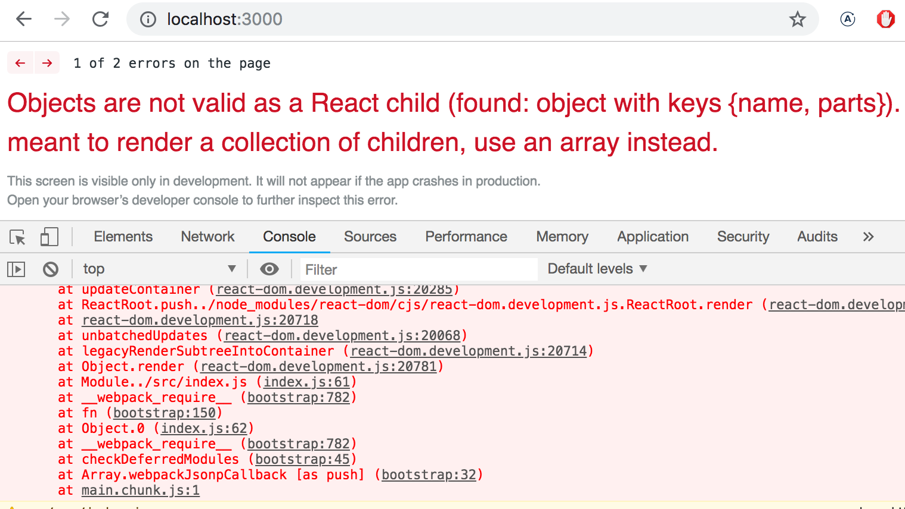
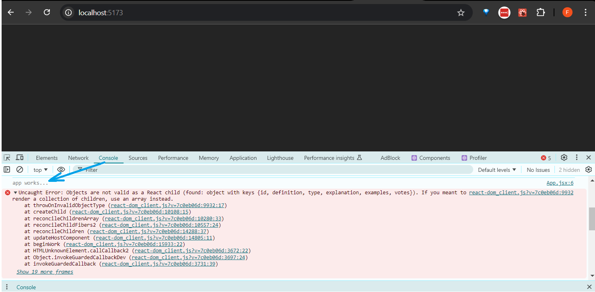

在开始新的部分之前，让我们回顾一下去年显示出的一些难点。
console.log
一个有经验的JavaScript程序员和一个菜鸟之间有什么区别？有经验的老鸟使用console.log的次数要多10~100倍。
矛盾的是，看样子确实如此，即便一个菜鸟程序员应该比一个有经验的程序员更需要console.log（或任何调试方法）。
当某些东西运行不了时，不要只是猜哪里错了。而要记录或使用其他一些调试方法。
注意 正如第1章节所说的，当你使用_console.log_命令进行调试时，不要用“Java式”的加号来连接要打印的东西。不要写：
console.log('props value is' + props)
而要用逗号分开要打印的东西：
console.log('props value is', props)
如果你把一个对象和一个字符串用加号连接起来并记录到控制台（比如我们的第一个例子），结果将完全无用：
props value is [Object object]
相反，如果你把对象用逗号分开，作为不同的参数传递给_console.log_，比如我们上面的第二个例子，对象的内容会被打印到开发者控制台，成为可检查的字符串。
必要时，请阅读更多关于调试React应用的内容。
专业提示：Visual Studio Code代码片段
Visual Studio Code里可以很方便地创建“Snippets”（代码片段），即快速生成常用的重复使用的代码片段，很像Netbeans中的“sout”。
创建代码片段的方法可以看这里。
有用的、现成的代码片段也可以在VS Code应用商店里作为VS Code插件找到。
最重要的代码片段是用于console.log()命令的片段，比如用clog。它可以这么创建：
{
"console.log": {
"prefix": "clog",
"body": [
"console.log('$1')",
],
"description": "Log output to console"
}
}
使用_console.log()_来调试你的代码非常常见，因此Visual Studio Code内置了这个代码片段。要使用它，输入_log_并按tab来自动完成。在VS Code应用商店中可以找到为_console.log()_代码片段提供更多功能的的扩展。
JavaScript数组
从现在开始，我们将一直使用JavaScript数组的函数式编程方法，例如_find_、filter_和_map。
如果你对用函数式编程操作数组感到陌生，那么值得看看YouTube视频系列Functional Programming in JavaScript的至少前三部分。
重提事件处理函数
去年的课程显示事件处理有些难度。
如果你想复习一下这个主题的知识的话，那么值得读一读上一章节最后的复习章节重提事件处理函数。
还有一些问题是关于将事件处理程序传递给App组件的子组件的。关于这个话题的小复习可以参考这里。
渲染集合
现在我们将用React做一个类似第0章节中示例程序的前端，或者叫用户界面（用户在浏览器中所看到的部分）。
让我们从下面开始（文件App.jsx）：
const App = (props) => {
const { notes } = props
return (
<div>
<h1>Notes</h1>
<ul>
<li>{notes[0].content}</li>
<li>{notes[1].content}</li>
<li>{notes[2].content}</li>
</ul>
</div>
)
}
export default App
文件main.jsx如下所示：
import ReactDOM from 'react-dom/client'
import App from './App'
const notes = [
{
id: 1,
content: 'HTML is easy',
important: true
},
{
id: 2,
content: 'Browser can execute only JavaScript',
important: false
},
{
id: 3,
content: 'GET and POST are the most important methods of HTTP protocol',
important: true
}
]
ReactDOM.createRoot(document.getElementById('root')).render(
<App notes={notes} />
)
每条笔记都包含它的文本内容、一个_布尔_值来标记该笔记是否重要，还有一个独一无二的id。
上面的例子之所以有效，是因为数组中正好有三条笔记。
每条笔记是通过硬编码索引号访问数组中的对象来渲染的。
<li>{notes[1].content}</li>
这当然不切实际。我们可以通过使用map函数从数组对象生成React元素来改进这一点。
notes.map(note => <li>{note.content}</li>)
结果是一个li元素的数组。
[
<li>HTML is easy</li>,
<li>Browser can execute only JavaScript</li>,
<li>GET and POST are the most important methods of HTTP protocol</li>,
]
然后可以将其放在ul标签内：
const App = (props) => {
const { notes } = props
return (
<div>
<h1>Notes</h1>
// highlight-start
<ul>
{notes.map(note => <li>{note.content}</li>)}
</ul>
// highlight-end
</div>
)
}
因为生成li标签的代码是JavaScript，必须将其包裹在JSX模板的大括号内，和其他所有JavaScript代码一样。
我们再将箭头函数的声明分成多行来使代码更易读：
const App = (props) => {
const { notes } = props
return (
<div>
<h1>Notes</h1>
<ul>
{notes.map(note =>
// highlight-start
<li>
{note.content}
</li>
// highlight-end
)}
</ul>
</div>
)
}
key属性
尽管应用似乎能运行，但控制台有一个讨厌的警告：

正如错误信息中链接的React页面所提示的；列表项，也就是_map_方法生成的元素，必须都有一个独一无二的键：一个叫做key的属性。
让我们来添加键：
const App = (props) => {
const { notes } = props
return (
<div>
<h1>Notes</h1>
<ul>
{notes.map(note =>
<li key={note.id}> // highlight-line
{note.content}
</li>
)}
</ul>
</div>
)
}
然后错误信息就消失了。
React使用数组中对象的key属性来决定如何在组件重新渲染时更新该组件生成的视图。更多内容可以查看React文档。
map
了解数组的map方法是如何工作的，对剩下的课程至关重要。
应用包含一个名为_notes_的数组：
const notes = [
{
id: 1,
content: 'HTML is easy',
important: true
},
{
id: 2,
content: 'Browser can execute only JavaScript',
important: false
},
{
id: 3,
content: 'GET and POST are the most important methods of HTTP protocol',
important: true
}
]
让我们停下来研究一下_map_是如何工作的。
如果下列代码被添加到比方说文件结尾的地方：
const result = notes.map(note => note.id)
console.log(result)
[1, 2, 3]会被打印到控制台。
_map_总是创建一个新数组，其中的元素是通过原数组的元素映射（mapping）创建的：使用_map_方法参数的函数。
而这个函数就是
note => note.id
这是一个紧凑形式的箭头函数。完整的形式应该是：
(note) => {
return note.id
}
该函数以一个笔记对象作为参数，并返回其id字段的值。
把命令改成:
const result = notes.map(note => note.content)
会得到一个包含笔记内容的数组。
这已经非常接近我们使用的React代码了：
notes.map(note =>
<li key={note.id}>
{note.content}
</li>
)
它生成每个笔记对象的li标签，包含每个笔记对象的内容。
因为传递给_map_方法的函数参数——
note => <li key={note.id}>{note.content}</li>
——是用来创建视图元素的，变量的值必须在大括号内渲染。试试如果去掉大括号会发生什么。
使用大括号一开始会比较痛苦，但你很快就会习惯。React的视觉反馈是即时的。
禁止事项：使用数组索引作为键
要使控制台中的错误信息消失，我们还可以通过使用数组索引作为键的方式。索引可以通过向_map_方法的回调函数传递第二个参数获取：
notes.map((note, i) => ...)
当像这样调用时，_i_会被赋值笔记在数组中所在位置的索引值。
因此，这么定义生成的各行也不会出错：
<ul>
{notes.map((note, i) =>
<li key={i}>
{note.content}
</li>
)}
</ul>
然而，不建议这么做，这会产生意想不到的问题，即使它看起来运行得很好。
阅读这篇文章了解更多。
重构模块
让我们把代码整理一下。我们只关心props的_notes_字段，所以让我们直接使用解构来获取它：
const App = ({ notes }) => { //highlight-line
return (
<div>
<h1>Notes</h1>
<ul>
{notes.map(note =>
<li key={note.id}>
{note.content}
</li>
)}
</ul>
</div>
)
}
如果你忘记了解构是什么意思以及它是如何工作的，请复习一下解构部分。
我们将显示一条笔记的功能分离到它自己的组件Note：
// highlight-start
const Note = ({ note }) => {
return (
<li>{note.content}</li>
)
}
// highlight-end
const App = ({ notes }) => {
return (
<div>
<h1>Notes</h1>
<ul>
// highlight-start
{notes.map(note =>
<Note key={note.id} note={note} />
)}
// highlight-end
</ul>
</div>
)
}
注意现在Note组件必须定义key属性，而不是像之前的li标签那样可定义可不定义。
可以将整个React应用写在一个文件中。虽然这当然不切实际。通常的做法是将每个组件在自己的文件中声明为ES6模块。
我们实际上一直都在使用模块。文件main.jsx的前几行：
import ReactDOM from "react-dom/client"
import App from "./App"
导入（import）了两个模块来在该文件中使用。模块react-dom/client被放入变量_ReactDOM_，而定义应用主要组件的模块被放入变量_App_。
让我们把我们的Note组件移到它自己的模块中。
在小型应用中，组件通常被放在src目录中的一个叫做components的目录中。一般用组件的名字来命名文件。
现在，我们将为我们的应用创建一个名为components的目录，并在其中放置一个名为Note.jsx的文件。文件的内容如下：
const Note = ({ note }) => {
return <li>{note.content}</li>
}
export default Note
模块的最后一行导出（export）了声明的模块，即变量Note。
现在使用该组件的文件——App.jsx——就可以导入（import） 该模块了：
import Note from './components/Note' // highlight-line
const App = ({ notes }) => {
// ...
}
模块导出的组件现在通过变量Note使用，就像之前那样。
注意，当导入我们自己的组件时，必须给出它们与导入文件的相对位置：
'./components/Note'
开头的点号——.——指的是当前目录，所以模块的位置是当前目录下components子目录中叫Note.jsx的文件。文件扩展名_.jsx_可以省略。
除了使组件声明分离到自己的文件中，模块还有很多其他的用途。我们将在本课程的后面再学习它们。
该应用当前的代码可以在GitHub上找到。
注意，仓库的main分支包含了应用后期版本的代码。目前的代码在分支part2-1中：

如果你克隆了这个项目，先运行命令_npm install_，然后再用_npm run dev_启动应用。
当应用崩溃时
在你编程生涯的早期（甚至像我这样编程了30年的人也会遇到），应用程序经常会彻底崩溃。对于动态类型语言，比如JavaScript，编译器不会检查数据类型，例如函数变量或返回值的类型，那么应用完全崩溃的情况就更常见了。
例如，“React崩了”可能会像这样：

在这些情况下，你最好的解决办法是使用console.log方法。
引起崩溃的那段代码是这样的：
const Course = ({ course }) => (
<div>
<Header course={course} />
</div>
)
const App = () => {
const course = {
// ...
}
return (
<div>
<Course course={course} />
</div>
)
}
我们将通过在代码中添加console.log命令来深入探究崩溃的原因。因为首先要渲染的是App组件，所以值得在那儿放第一个console.log：
const App = () => {
const course = {
// ...
}
console.log('App works...') // highlight-line
return (
// ..
)
}
要看到控制台中的打印内容，我们必须在满屏红色的错误信息中向上滚动鼠标。

当发现日志是有效的，就该深入打日志了。如果组件被声明为单个语句，或者是一个没有_return_的函数，就会使打印到控制台的难度增加。
const Course = ({ course }) => (
<div>
<Header course={course} />
</div>
)
我们应该把组件改为较长的形式来增加打印语句：
const Course = ({ course }) => {
console.log(course) // highlight-line
return (
<div>
<Header course={course} />
</div>
)
}
问题的根源往往是props被期望为不同的类型，或者被用与实际不同的名字调用，然后结果就是解构失败。当去掉解构，我们看到props实际包含的内容时，问题往往会开始自行解决。
const Course = (props) => { // highlight-line
console.log(props) // highlight-line
const { course } = props
return (
<div>
<Header course={course} />
</div>
)
}
如果问题仍然没有解决，除了继续通过在你的代码周围撒上更多的_console.log_语句来寻找错误之外，真的没有什么可做的。
之所以把这一章加入教材，是因为在下个问题的标准答案完全崩溃了（由于props的类型不对），然后我不得不用console.log来调试它。
web开发者誓言
在开始练习之前，让我提醒一下上一章节结尾你所保证过的。
编程不易，因此我要通过一切方法让它变得容易
- 我会始终打开我的浏览器开发者控制台
- 我小步前进
- 我会写大量的_console.log_语句来确保我理解代码是怎么运行的，并借此准确找到问题
- 如果我的代码出问题了，我不会写更多的代码。而是删除代码直到它能运行，或者直接回到之前代码能运行的状态
- 当我在课程的Discord群或者其他地方寻求帮助时，我会准确表达我的问题，点此了解如何寻求帮助。